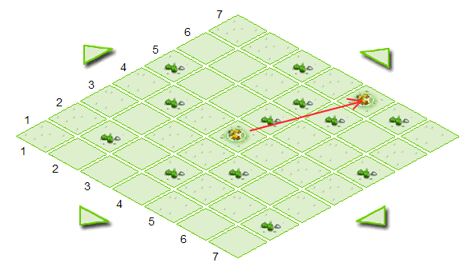
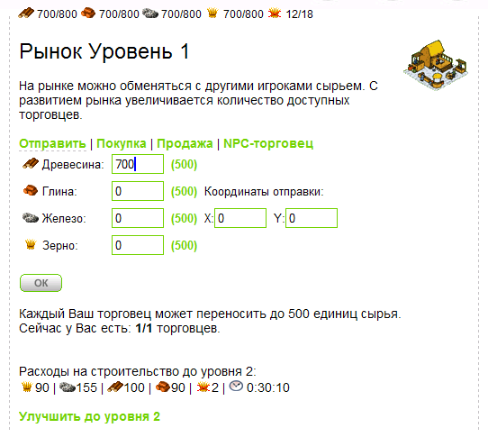
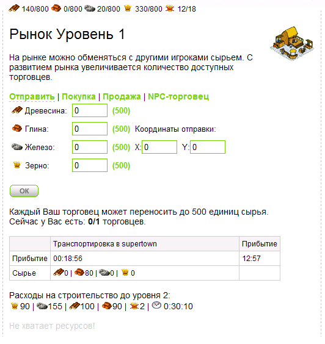
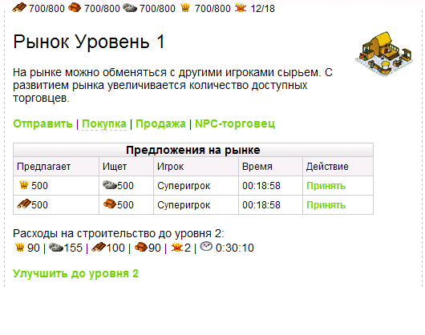
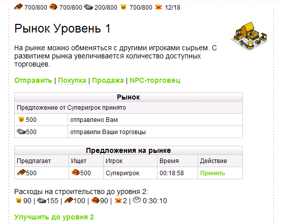
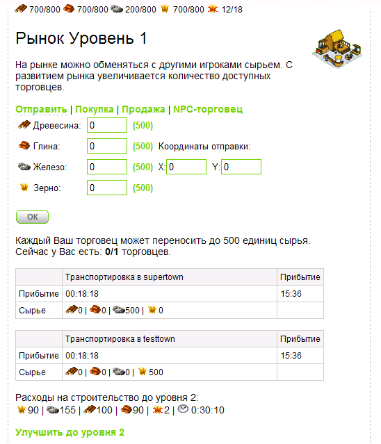
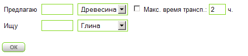
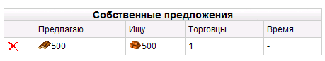
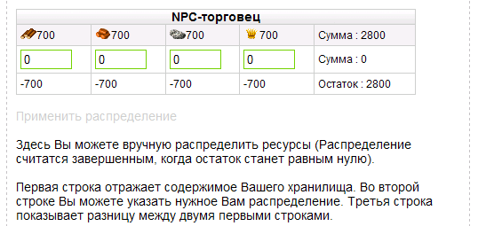
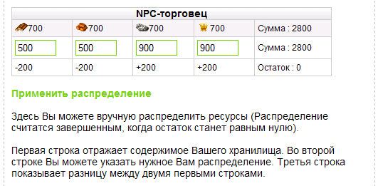

| |
Торговля ресурсами
8.1.
Количество торговцев
Добрый день, уважаемый коллега! На
сегодняшнем занятии мы продолжим тему Рынка, здание которого мы
научились строить в нашем поселке. Сегодня мы рассмотрим все
возможные торговые операции и мероприятия, связанные с
перераспределением имеющихся ресурсов. Напомним, что рынок в нашей
игре имеет картинку:
и в учебных целях создается сразу SQL
процедурой makebuildplaces, а именно
этой строкой в ней:
insert into `buildings` (bnum,bt_id,b_xcoord,b_ycoord,b_level,fid) VALUES (4,12,345,94,1,p_fid);;
Фрагмент 8.1.1
Вы помните, что bt_id=12 - это тип постройки - рынок (из таблицы
building_types).
Как Вы понимаете, чтоб осуществлять торговые операции, нам
понадобятся торговцы, которые будет перемещаться между поселками
и носить ресурсы в своих котомках, а может быть это будут телеги
запряженные лошадьми? В общем, не важно каким способом они будут
доставлять товар, главное, договоримся об их грузоподъемности.
Давайте предположим, что один торговец может переносить 500 единиц
какого-либо ресурса одного типа. Сколько же у нас будет торговцев?
Можно поступить следующим образом - количество торговцев будет равно
уровню здания Рынок. К примеру у нас Рынок второго уровня, значит
количество торговцев у нас - два и одновременно они смогут доставит
в какой-нибудь поселок 1000 единиц ресурса.
Давайте сделаем простую функцию, которая будет выдавать нам
количество торговцев, которым мы располагаем. Назовем эту функцию -
num_traders.
// узнаем сколько у нас торговцев (кол-во торговцев = уровню рынка)?
function num_traders( $fid ){
$btype = 12; // Идентификатор рынка из таблицы building_types
$res = mysql_query("SELECT b_level from buildings where fid=$fid and bt_id=$btype" )
or die("Query failed : " . mysql_error());
$row = mysql_fetch_array( $res );
return ( $row["b_level"] );
}
Фрагмент 8.1.2Тут все просто - по типу
здания (12 для рынка) и идентификатору поселка мы узнаем уровень
Рынка в этом поселке игрока b_level в таблице buildings и
возвращаем это значение, так как уровень Рынка = количеству
торговцев.
И сейчас нам нужно научиться пользоваться услугами наших торговцев
на примере отправки какого-нибудь ресурса в соседний поселок.
8.2.
Отправка ресурсов
Вы помните, что у нас в нашей тестовой
учебной игре существует пока что два игрока -
test и
Суперигрок. Поселки их находятся не
так далеко друг от друга и мы вполне можем поэкспериментировать с
перемещениями ресурсов между ними. Но перед этим договоримся, что
скорость наших торговцев будет составлять, ну, к примеру - 10
полей в час. Чтоб рассчитать время, которое понадобится торговцам
для путешествия из поселка в поселок, нам понадобится вычислить
расстояние между ними, по координатам их размещения на глобальной
карте (таблица fields).
Вспомнив школьный курс геометрии ил покопавшись в
google, мы решили воспользоваться формулой
длины отрезка:
Длина отрезка = корень квадратный из квадратов разности координат
вершин отрезка, то есть что-то типа этого: sqrt( (x1-x2)2+(y1-y2)2
)
Давайте напишем функцию, которую назовем
distance_btw_villages и она нам как раз и будет вычислять это
расстояние:
// расстояние между поселками
function distance_btw_villages( $fid, $dest_x, $dest_y ){
$res = mysql_query("SELECT xcoord, ycoord from fields where fid=$fid" )
or die("Query failed : " . mysql_error());
$row = mysql_fetch_array( $res );
$x_s = $row["xcoord"];
$y_s = $row["ycoord"];
$distance = sqrt( pow(($x_s-$dest_x),2)+pow(($y_s-$dest_y),2) );
return( $distance );
}
Фрагмент 8.2.1Мы будем передавать в эту
функцию координаты поселка назначения ( $dest_x, $dest_y) и
идентификатор поселка из которого производится отправка
$fid. По этому
идентификатору SQL запрос найдет и
координаты поселка отправки, а располагая всеми четырьмя
координатами, мы может определить все расстояние
$distance.
Теперь давайте немного модифицируем шаблон
tpl_g17.php, который теперь будет
давать возможность отправлять ресурсы (нужно будет ввести сколько
ресурсов) в указанный поселок (нужно будет ввести его координаты,
посмотрев из на глобальной карте)
Но чтоб отправить торговца в путь, нам понадобится таблица в которой
мы будем хранить информацию о его начальной и конечной точке
перемещения, времени доставки и т.д. По сути - это та же очередь
каких-то действий (мы уже делали подобные на предыдущих занятиях)
Назовем таблицу, которая будет хранить информацию о перемещении
торговцев job_traders_move. Вот эта таблица:
/* таблица очереди движения торговцев */
CREATE TABLE `job_traders_move` (
jtm_id bigint(20) unsigned NOT NULL auto_increment, /*ID*/
fid bigint(20), /*откуда? и принадлежность поселку*/
fid_to bigint(20), /*куда?*/
jtm_start_time bigint DEFAULT 0, /*начало движения*/
jtm_end_time1 bigint DEFAULT 0, /*время достижения пункта назначения*/
jtm_end_time2 bigint DEFAULT 0, /*время возврата в свой поселок*/
jtm_direction int default 1, /* 1-с грузом, 2-пустые назад*/
jtm_hash char(50),
jtm_wood INT DEFAULT 0, /* ресурсы, переносимые торговцами */
jtm_clay INT DEFAULT 0,
jtm_ore INT DEFAULT 0,
jtm_grain INT DEFAULT 0,
jtm_traders_num int, /* сколько торговцев задействовано */
PRIMARY KEY (`jtm_id`)
) ENGINE=MyISAM DEFAULT CHARSET=cp1251;
Фрагмент 8.2.2jtm_id - уникальный
идентификатор в таблице job_traders_move.
fid - идентификатор поселка, из которого отправились торговцы
fid_to - идентификатор поселка, куда отправились торговцы
jtm_start_time - время начала движения
jtm_end_time1 - время доставки ресурсов
jtm_end_time2 - время возвращения обратно в свой поселок
jtm_direction - направление движения (1-туда, 2-обратно)
jtm_hash - некая служебная информация
jtm_wood - сколько несут древесины
jtm_clay - сколько несут глины
jtm_ore - сколько несут руды
jtm_grain - сколько несут зерна
jtm_traders_num - количество задействованных торговцев в
доставке
Что ж, пора отправлять торговцев в путь:

Рисунок 8.2.1
Шаблон отправки
tpl_g17.php мы переделаем так:
// Рынок
echo "<div id='textmenu'>
<a href='build.php?bnum=$bnum' class='selected '>Отправить</a>
| <a href='build.php?bnum=$bnum&p=2'>Покупка</a>
| <a href='build.php?bnum=$bnum&p=3'>Продажа</a>
| <a href='build.php?bnum=$bnum&p=4'>NPC-торговец</a>
</div>";
echo '<form name="sending" method="POST" action="build.php?'.$_SERVER["QUERY_STRING"].'">
<table style="border-collapse: collapse;" cellpadding="0" cellspacing="0" id="army"><tr>
<td class="resinfo"><img src="img/res/wood.png"> Древесина: </td>
<td class="resinfo"><input type="text" size=5 class="text" id="r1" name="r1" value="0" maxlength="4" onKeyUp="upd_res(1)" ></td>
<td class="resinfo"><a href="#" onClick="set_res_qty(1,500)">(500)</a></td>
<td class="resinfo"></td>
</tr><tr>
<td class="resinfo"><img src="img/res/clay.png"> Глина: </td>
<td class="resinfo"><input type="text" size=5 class="text" id="r2" name="r2" value="0" maxlength="4" onKeyUp="upd_res(2)" ></td>
<td class="resinfo"><a href="#" onClick="set_res_qty(2,500)">(500)</a></td>
<td class="resinfo">Координаты отправки:</td>
</tr><tr>
<td class="resinfo"><img src="img/res/ore.png"> Железо: </td>
<td class="resinfo"><input type="text" size=5 class="text" id="r3" name="r3" value="0" maxlength="4" onKeyUp="upd_res(3)" ></td>
<td class="resinfo"><a href="#" onClick="set_res_qty(3,500)">(500)</a></td>
<td class="resinfo">
X:<input type="text" size=5 class="text" id="x" name="x" value="0" maxlength="4">
Y:<input type="text" size=5 class="text" id="y" name="y" value="0" maxlength="4">
</td>
</tr><tr>
<td class="resinfo"><img src="img/res/grain.png"> Зерно: </td>
<td class="resinfo"><input type="text" size=5 class="text" id="r4" name="r4" value="0" maxlength="4" onKeyUp="upd_res(4)" ></td>
<td class="resinfo"><a href="#" onClick="set_res_qty(4,500)">(500)</a></td>
<td class="resinfo"></td>
</tr>';
echo '</table>';
echo '<br><img src="img/vill/ok.png" onclick="init_send()" style="cursor:hand"></br>
<input type="hidden" name="send">
<input type="hidden" name="hash" value="'.md5(mktime()).'" >
</form>';
echo '<br>Каждый Ваш торговец может переносить до 500 единиц сырья.<br>';
echo 'Сейчас у Вас есть: <b>'.traders_ready($fid).'/'.num_traders($fid).'</b> торговцев. <br><br>';
update_traders_moving( $fid );
show_traders_moving( $fid );
Фрагмент 8.2.3Из вышеприведенного фрагмента
видно, что сразу после меню (строки 2-7) мы создаем форму и таблицу
для ввода необходимых для отправки торговцев данных. Тут есть и поля
ввода количества ресурсов каждого типа с идентификаторами (r1,r2,r3,r4)
и поля для ввода координат поселка, куда мы хотим отправить
груз с идентификаторами (x,y)
и непосредственно кнопка отправки
 .
Здесь есть и JavaScript функции для
проверки вводимого количества ресурсов -
upd_res и их отправки - init_send.
Кроме того в этом фрагменте есть механизм от повторных отправок
(вдруг игрок отправит торговцев, а потом еще раз сделает
Refresh страницы). Этот механизм
начинается здесь, в форме заполнением невидимого поля с именем
hash .
Здесь есть и JavaScript функции для
проверки вводимого количества ресурсов -
upd_res и их отправки - init_send.
Кроме того в этом фрагменте есть механизм от повторных отправок
(вдруг игрок отправит торговцев, а потом еще раз сделает
Refresh страницы). Этот механизм
начинается здесь, в форме заполнением невидимого поля с именем
hash
(строка 38)
специальным уникальной хэш-строкой, которая запишется в таблицу job_traders_move.
Вот как выглядит эта форма в окне браузера:

Рисунок 8.2.2
При щелчке на количестве ресурсов (500) - это количество переносится
в поле соответствующего типа ресурса. Также количество можно вручную
вносить в это поле. JavaScript функция
upd_res следит, чтоб это
количество было не больше имеющегося в наличии количества этого типа
ресурсов при ручном вводе. А функция set_res_qty
занимается тем же самом при клике на (500). Вот как выглядят эта
функции:
// проверка при добавлении по 500 ресурсов
function set_res_qty( elem, qty ){
resvalue = parseInt( document.getElementById("r"+elem).value );
maxvalue = document.getElementById("dr"+elem).innerHTML;
if ( (resvalue+qty) <= maxvalue )
document.getElementById("r"+elem).value = resvalue+qty;
else
document.getElementById("r"+elem).value = maxvalue;
}
// проверка при вводе вручную кол-ва ресурсов
function upd_res( elem ){
resvalue = parseInt( document.getElementById("r"+elem).value );
maxvalue = document.getElementById("dr"+elem).innerHTML;
if (resvalue > maxvalue) document.getElementById("r"+elem).value =
document.getElementById("dr"+elem).innerHTML;
}
Фрагмент 8.2.4Вы видите, что обе функции
сравнивают вводимые тем или иным способом данные о количестве
ресурсов с имеющимися в наличии. Для древесины это количество
хранится на странице в элементе
<span
id="dr1"></span>,
для глины - <span
id="dr2">140</span>
вот отсюда и берутся эти данные для сравнения с
вводимым. При вводе недопустимого числа, оно тут же меняется на
максимальное значение для этого ресурса.
После заполнения необходимых полей ресурсов, выбора координат
поселка, куда будут отправлены ресурсы (для поселка персонажа
Суперигрок это будут
X=7 Y=5,
смотрите рисунок 8.2.1) и нажатия кнопки
с
именем send
сработает JavaScript функция init_send,
которая выглядит так:
function init_send(){
sending.submit();
}
Фрагмент 8.2.5То есть она только и делает,
что отправляет данные введенные в форму с именем
sending в файл build.php.
Что же происходит там, в этом файле. Мы предусмотрительно в этом
занятии добавили в него пару строк, чтоб обработать эту ситуацию:
// задали отправку ресурсов в другой поселок
if( isset( $_POST["send"] ) ){
$p_wood = $_POST["r1"];
$p_clay = $_POST["r2"];
$p_ore = $_POST["r3"];
$p_grain = $_POST["r4"];
$p_x = $_POST["x"];
$p_y = $_POST["y"];
$hash = $_POST["hash"];
init_send_res( $fid, $p_wood, $p_clay, $p_ore, $p_grain, $p_x, $p_y, $hash );
}
Фрагмент 8.2.6Тут считываются данные,
переданные формой и передаются в PHP
функцию init_send_res, которую мы
должны сейчас сделать:
// засовываем торговцев в очередь с разными проверками
function init_send_res( $fid, $p_wood, $p_clay, $p_ore, $p_grain, $p_x, $p_y, $hash ){
if( !is_trade_hash( $fid, $hash ) ){
$max_traders_capacity = num_traders( $fid )*500;
$max_res = $p_wood+$p_clay+$p_ore+$p_grain;
$traders_needed = ceil( $max_res/500 );
if( $max_traders_capacity >= $max_res ){
// проверим существование поселка, куда отправляются торговцы!
$res = mysql_query("SELECT fid, usr_id, fid_name from fields where xcoord=$p_x and ycoord=$p_y and usr_id<>0" )
or die("Query failed : " . mysql_error());
if (mysql_num_rows( $res ) > 0){
$row = mysql_fetch_array( $res );
$fid_to = $row["fid"];
$distance = distance_btw_villages( $fid, $p_x, $p_y );
$speed = 10/3600; // 10 полей в час
$sec = floor( $distance / $speed );
$start_time = time();
$end_time1 = $start_time + $sec;
$end_time2 = $end_time1 + $sec;
$res = mysql_query("insert into job_traders_move(fid,fid_to,jtm_start_time,jtm_end_time1,jtm_end_time2,jtm_direction,jtm_hash,jtm_wood,
jtm_clay,jtm_ore,jtm_grain,jtm_traders_num)
values ($fid,$fid_to,$start_time,$end_time1,$end_time2,1,'$hash',$p_wood, $p_clay, $p_ore, $p_grain, $traders_needed)")
or die("Query failed : " . mysql_error());
// уменьшим наши ресурсы (т.к. торговцы забрали их)
$result = mysql_query("update fields set f_wood=f_wood-$p_wood,
f_clay=f_clay-$p_clay,
f_ore=f_ore-$p_ore,
f_grain=f_grain-$p_grain
where fid = $fid" )
or die("Query failed : " . mysql_error());
} else echo "<br>Поселка с такими координатами не существует!<br>";
} else echo "<br>Не хватает торговцев!<br>";
}
}
Фрагмент 8.2.7В строке 3
вышеприведенного фрагмента мы проверяем нет ли в таблице
job_traders_move уже такой
записи при помощи функции is_trade_hash.
Это проверка - на отправку одних и тех же данных из формы.
Рассмотрите ее самостоятельно. В строках 4-6 мы определяем
максимально количество торговцев и их грузоподъемность, которые
могут переносить этот груз и в строке 7 проверяем есть ли у нас
достаточное количество этих торговцев, если нет - выдаем сообщение
(строка 35). Если торговцев хватает - проверим существование
поселка, куда мы направляем торговцев по координатам, введенным в
форме (строки 9-10). Если такой поселок существует (usr_id
в нем не равен 0, то есть это поле занято каким-то игроком)
то мы определяем расстояние до него, а также время доставки (строки
15-17). В строках 19-21 мы определяем время начала движения, время
доставки груза и время возвращения в свой поселок. Далее нам
остается вставить рассчитанные данные в таблицу job_traders_move.
Ну и в итоге уменьшим количество ресурсов в нашем поселке на ту
величину, которую забрали торговцы.
Теперь нам нужно визуализировать очередь движения торговцев, чтоб
игрок всегда был в курсе времени доставки груза и возвращения
торговцев обратно в поселок. Этим займется функция
show_traders_moving. Вот как она
выглядит:
function show_traders_moving( $fid ){
$cnt = 0;
// Это наши торговцы
$result = mysql_query("SELECT f.fid_name,jtm_start_time,jtm_end_time1,jtm_end_time2,
jtm_direction, jtm_wood,jtm_clay,jtm_ore,jtm_grain
from job_traders_move jtm
inner join fields f on f.fid = jtm.fid_to
where jtm.fid=$fid" )
or die("Query failed : " . mysql_error());
$num_rows = mysql_num_rows( $result );
if( $num_rows > 0 ){
$script = "";
while( $row = mysql_fetch_array( $result )){
$time_s = $row["jtm_start_time"];
$time_e1 = $row["jtm_end_time1"];
$time_e2 = $row["jtm_end_time2"];
$fid_name = $row["fid_name"];
$direction = $row["jtm_direction"];
echo '<table style="border-collapse: collapse;" cellpadding="0" cellspacing="0" id="army"><tr>
<td class="tabhead"></td>
<td width="300" class="tabhead">'.($direction==1 ? "Транспортировка в ":"Возвращение из ").$fid_name.'</td>
<td class="tabhead">Прибытие</td>
</tr>';
// туда или обратно?
$time_e = ($direction==1 ? $time_e1 : $time_e2 );
echo '<tr><td class="armyinfo">Прибытие</td>
<td class="armyinfo"><span id="restimer'.$cnt.'"></span> </td>
<td class="armyinfo"> '.date('H:i',$time_e).'</td></tr>';
$rest = s2h($time_e-time());
$hms = explode(':', $rest);
$script .= "atimers[$cnt] = [ $hms[0], $hms[1], $hms[2] ]; ";
$cnt ++;
echo '<tr><td class="armyinfo">Сырье</td>
<td class="armyinfo">
<img src="img/res/wood.png">'.$row["jtm_wood"].' |
<img src="img/res/clay.png">'.$row["jtm_clay"].' |
<img src="img/res/ore.png">'.$row["jtm_ore"].' |
<img src="img/res/grain.png">'.$row["jtm_grain"].'
</td>
<td class="armyinfo"></td></tr>';
echo '</table>';
}
}
echo '<script>';
echo $script;
echo 'updateClock(); setInterval("updateClock()", 1000 );';
echo '</script>';
}
Фрагмент 8.2.8Здесь все стандартно. Мы уже не раз визуализировали
очереди каких-либо событий. Единственный интерес вызывает такой
момент - так как торговцы доставляют товар и возвращаются обратно,
то мы должны ориентироваться на поле jtm_direction и в
зависимости от его значения выводить надпись "Транспортировка в" или
"Возвращение из". Процесс визуализации, показываемый функцией
show_traders_moving после отправки 80
единиц глины в поселок игрока Суперигрок
примерно выглядит так:

Рисунок 8.2.3
Чуть позже мы расширим эту функцию и добавим сюда перемещения чужих
торговцев в наш поселок.
Вы видите надпись "Сейчас у Вас торговцев 0/1", то есть все заняты и
больше мы послать никого не сможем. Количество имеющихся в наличии
свободных торговцев возвращает функция
traders_ready.
///// Сколько у нас свободно торговцев?
function traders_ready( $fid ){
// Узнаем, есть ли у нас торговцы в пути?
$total_traders = 0;
$result = mysql_query("SELECT jtm_traders_num
from job_traders_move jtm
where jtm.fid=$fid" )
or die("Query failed : " . mysql_error());
$num_rows = mysql_num_rows( $result );
if( $num_rows > 0 ){
while ($row = mysql_fetch_array( $result )) {
$total_traders += $row["jtm_traders_num"];
}
return( num_traders( $fid ) - $total_traders );
} else {
return ( num_traders( $fid ) );
}
}
Фрагмент 8.2.9
Эта функция проверяет, есть ли для указанного поселка
какие-то очереди перемещения торговцев и если есть - находит общее
количество торговцев задействованных в этих операциях ( из таблицы
job_traders_move ) и затем вычитает это число из имеющегося
числа торговцев в этом поселке.
Последнее, что нам осталось - это определять моменты доставки товара
и возвращения торговцев в родной поселок. Для этого мы с Вами
разработаем функцию update_traders_moving.
Посмотрите как она выглядит чуть ниже:
///////// проверка перемещения торговцев //////////////
function update_traders_moving( $fid ){
// что у нас в очереди перемещений торговцев?
$res = mysql_query("SELECT jtm_id, fid_to,jtm_start_time,jtm_end_time1,jtm_end_time2,
jtm_direction, jtm_wood,jtm_clay,jtm_ore,jtm_grain
from job_traders_move jtm
where jtm.fid=$fid")
or die("Query failed : " . mysql_error());
$num_rows = mysql_num_rows( $res );
if( $num_rows > 0 ){
$cur_time = time();
while ($row = mysql_fetch_array( $res )) {
$jtm_id = $row["jtm_id"];
$fid_to = $row["fid_to"];
$time_s = $row["jtm_start_time"];
$time_e1 = $row["jtm_end_time1"];
$time_e2 = $row["jtm_end_time2"];
$direction = $row["jtm_direction"];
$a_wood = $row["jtm_wood"];
$a_clay = $row["jtm_clay"];
$a_ore = $row["jtm_ore"];
$a_grain = $row["jtm_grain"];
if( $time_e2 <= $cur_time ){ // уже прибыли и вернулись!
if( $direction == 1 ){ // еще не обработали прибытие
// добавим ресов тому кому несли
$result = mysql_query("update fields set f_wood=f_wood+$a_wood,
f_clay=f_clay+$a_clay,
f_ore=f_ore+$a_ore,
f_grain=f_grain+$a_grain
where fid = $fid_to" )
or die("Query failed : " . mysql_error());
// убираем из очереди
$result = mysql_query("delete from job_traders_move
where jtm_id=$jtm_id" )
or die("Query failed : " . mysql_error());
} else {
// убираем из очереди
$result = mysql_query("delete from job_traders_move
where jtm_id=$jtm_id" )
or die("Query failed : " . mysql_error());
}
} else {
if( $time_e1 <= $cur_time ){
// уже прибыли но пока не возвращались
// добавим ресов тому кому несли
$result = mysql_query("update fields set f_wood=f_wood+$a_wood,
f_clay=f_clay+$a_clay,
f_ore=f_ore+$a_ore,
f_grain=f_grain+$a_grain
where fid = $fid_to" )
or die("Query failed : " . mysql_error());
// поменяем статус перемещения - на возврат
$result = mysql_query("update job_traders_move
set jtm_direction=2, jtm_wood=0,jtm_clay=0,jtm_ore=0,jtm_grain=0
where jtm_id=$jtm_id" )
or die("Query failed : " . mysql_error());
}
}
}
}
}
Фрагмент 8.2.10В этой функции мы получаем необходимые данные из
запроса к таблице job_traders_move и затем осуществляем
простые проверки по времени и направлению движения торговцев. Так
если время возвращения меньше текущего (строка 26), то мы проверяем
направление ($direction ) и если оно равно
1, то еще не было обработки доставки ресурсов, что мы и делаем в
строках 28-34, добавляя ресурсы в поселок, куда направлялись наши
торговцы, затем удаляем очередь из job_traders_move
(строки 35-38). Если доставка уже осуществлялась ($direction
не равен 1 ) , значит просто удалим из очереди (строки 40-43). Если
же время возвращения еще не наступило, то мы проверяем, а прошло ли
время доставки (строка 46), и если да - добавляем ресурсов в пункт
назначения, а в очереди в таблице job_traders_move меняем
статус в поле jtm_direction на 2
и обнуляем ресурсы.
Как Вы помните из фрагмента 8.2.3 эти
функции show_traders_moving и
update_traders_moving вызываются в
шаблоне Рынка. Таким образом, игрок, заходя в здание рынка в своем
поселке будет всегда в курсе событий, связанных с перемещениями
торговцев.
8.3.
Покупка ресурсов
Иногда у игрока возникает потребность обменять один вид ресурса,
которого у него в избытке на другой, более нужный ему в процессе
игры ресурс. Конечно же мы должны дать ему такую возможность. На
этом же рынке, но в шаблоне tpl_g17_2.php
мы должны выводить информацию о предложениях по обмену одного
ресурса на другой остальных игроков на рынке. Для этих целей нам
понадобится таблица предложений. Назовем мы эту таблицу -
res_offers. Вот она:
/* Таблица предложений продажи ресурсов */
CREATE TABLE `res_offers` (
ro_id bigint(20) unsigned NOT NULL auto_increment, /*ID*/
fid bigint(20), /*откуда? и принадлежность поселку*/
rft_id_offer INT, /* тип ресурса из res_fields_types предложение*/
ro_qty_offer int DEFAULT 0, /* количество предлагаемого ресурса предложение*/
rft_id_need INT, /* тип ресурса из res_fields_types требуется*/
ro_qty_need int DEFAULT 0, /* количество предлагаемого ресурса требуется*/
ro_max_time int default 0, /* максимальное время транспортировки */
ro_hash char(50),
PRIMARY KEY (`ro_id`)
) ENGINE=MyISAM DEFAULT CHARSET=cp1251;
Фрагмент 8.3.1
ro_id - уникальный идентификатор в таблице res_offers
fid - идентификатор поселка из таблицы
fields.
rft_id_offer - идентификатор (тип
из таблицы res_fields_types ) ресурса который предлагается
игроком
ro_qty_offer - количество предлагаемого ресурса
rft_id_need - идентификатор (тип из
таблицы res_fields_types ) ресурса который требуется игроку
ro_qty_need - количество требуемого ресурса
ro_max_time - максимальное время транспортировки
ro_hash - служебная информация
Давайте сразу добавим в эту таблицу немного данных, как будто
игрок Суперигрок выставил
некоторые ресурсы для обмена.
insert into res_offers (fid, rft_id_offer, ro_qty_offer, rft_id_need, ro_qty_need) values (67, 1, 500, 2, 500);
insert into res_offers (fid, rft_id_offer, ro_qty_offer, rft_id_need, ro_qty_need) values (67, 3, 500, 4, 500);
Фрагмент 8.3.2Теперь у нас есть все
необходимое, чтоб модифицировать шаблон
tpl_g17_2.php для показа рыночных предложений обмена
ресурсов от других игроков.
// Рынок
$ta = false; // заключена ли сделка?
echo "<div id='textmenu'>
<a href='build.php?bnum=$bnum'>Отправить</a>
| <a href='build.php?bnum=$bnum&p=2' class='selected'>Покупка</a>
| <a href='build.php?bnum=$bnum&p=3'>Продажа</a>
| <a href='build.php?bnum=$bnum&p=4'>NPC-торговец</a>
</div>";
// приняли предложение на рынке
if( isset( $_GET["ri"] ) ){
$ta = init_trade_accept( $fid, $_GET["ri"] );
}
echo ' <br>
<table width="450" style="border-collapse: collapse;" cellpadding="0" cellspacing="0" id="army">
<tr>
<td colspan="5" class="trade_bg">Предложения на рынке</td>
</tr>
<tr>
<td class="tabhead">Предлагает</td>
<td class="tabhead">Ищет</td>
<td class="tabhead">Игрок</td>
<td class="tabhead">Время</td>
<td class="tabhead">Действие</td>
</tr>';
$res = mysql_query("SELECT ro_id, ro.fid, u.nick, f.xcoord, f.ycoord,
rft1.rft_sm_image im1,
rft2.rft_sm_image im2,
rft_id_offer, ro_qty_offer, rft_id_need, ro_qty_need
from res_offers ro
inner join fields f on f.fid = ro.fid
inner join users u on u.usr_id = f.usr_id
inner join res_fields_types rft1 on rft1.rft_id = ro.rft_id_offer
inner join res_fields_types rft2 on rft2.rft_id = ro.rft_id_need
where ro.fid <> $fid" )
or die("Query failed : " . mysql_error());
while ($row = mysql_fetch_array( $res )) {
$ro_id = $row["ro_id"];
$nick = $row["nick"];
$im1 = $row["im1"];
$im2 = $row["im2"];
$qty_offer = $row["ro_qty_offer"];
$qty_need = $row["ro_qty_need"];
$p_x = $row["xcoord"];
$p_y = $row["ycoord"];
$distance = distance_btw_villages( $fid, $p_x, $p_y );
$speed = 10/3600; // торговцы идут 10 полей в час
$sec = floor( $distance / $speed );
$time = s2h( $sec );
echo '<tr><td class="armyinfo"><img src="'.$im1.'">'.$qty_offer.'</td>
<td class="armyinfo"><img src="'.$im2.'">'.$qty_need.'</td>
<td class="armyinfo">'.$nick.'</td>
<td class="armyinfo">'.$time.'</td>
<td class="armyinfo">
<a href="build.php?bnum='.$bnum.'&p=2&ri='.$ro_id.'">Принять</a>
</td><tr>';
}
echo '</table>';
Фрагмент 8.3.3Выглядит, формируемая этим фрагментом страница в
браузере следующим образом:

Рисунок 8.3.1
Как Вы видите из фрагмента 8.3.3, этот шаблон на основании
SQL запроса (строки 29-39)
сразу к трем таблицам ( res_offers, users и res_fields_types
) формирует HTML табличку
со списком всех предложений, где выводятся типы предлагаемых
и требуемых ресурсов, а также их количество, ник игрока и время
доставки в строках 51-54 на основании расстояния между поселками,
того кто предлагает обмен и того, кто сейчас рассматривает это
предложение. Так, если мы примем первое предложение от игрока
Суперигрок, то наши торговцы и его торговцы доставят товары (мы -
железо, а они - зерно) в течении 18 минут и 58 секунд.
Что же произойдет, если мы нажмем ссылку "Принять". А вот что -
управление снова передастся в эту же страницу и кроме номера
постройки bnum будет также передан
параметр ri, который хранит в себе
идентификатор строки предложения (поле
ro_id из таблицы res_offers) Вы видите, что в
строках 12-14 этого же фрагмента и происходит обработка приема этого
идентификатора и вызов функции init_trade_accept,
в которую кроме поселка, передается и этот идентификатор сделки из
таблицы res_offers.
Чем же занимается функция init_trade_accept?
Ниже приведено тело этой функции:
// заключаем торговую сделку - принимая чье-то предложение
function init_trade_accept( $fid, $ro_id ){
// покажем табличку принятого предложения
echo '<br>
<table width="450" style="border-collapse: collapse;" cellpadding="0" cellspacing="0" id="army">
<tr>
<td colspan="2" class="trade_bg">Рынок</td>
</tr>';
$res = mysql_query("SELECT ro_id, ro.fid, u.nick, f.xcoord, f.ycoord,
rft1.rft_sm_image im1,
rft2.rft_sm_image im2,
rft_id_offer, ro_qty_offer, rft_id_need, ro_qty_need
from res_offers ro
inner join fields f on f.fid = ro.fid
inner join users u on u.usr_id = f.usr_id
inner join res_fields_types rft1 on rft1.rft_id = ro.rft_id_offer
inner join res_fields_types rft2 on rft2.rft_id = ro.rft_id_need
where ro.ro_id = $ro_id" )
or die("Query failed : " . mysql_error());
$row = mysql_fetch_array( $res );
$fid_from = $row["fid"]; // от кого принимаем
$nick = $row["nick"];
$im1 = $row["im1"];
$im2 = $row["im2"];
$rft_id_offer = $row["rft_id_offer"];
$qty_offer = $row["ro_qty_offer"];
$rft_id_need = $row["rft_id_need"];
$qty_need = $row["ro_qty_need"];
$p_x = $row["xcoord"];
$p_y = $row["ycoord"];
echo '<tr>
<td colspan="2" class="tabhead">Предложение от '.$nick.' принято</td>
</tr>';
echo '<tr><td class="armyinfo"><img src="'.$im1.'">'.$qty_need.'</td>
<td class="armyinfo">отправлено Вам</td></tr>
<tr><td class="armyinfo"><img src="'.$im2.'">'.$qty_offer.'</td>
<td class="armyinfo">отправили Ваши торговцы</td><tr>';
echo '</table>';
// создаем движение торговцев к нам и от нас!
init_trades_moving($fid_from, $fid, $rft_id_offer, $qty_offer );
init_trades_moving($fid, $fid_from, $rft_id_need, $qty_need );
// а теперь удалим это предложение
$res = mysql_query("DELETE from res_offers
where ro_id = $ro_id" )
or die("Query failed : " . mysql_error());
}
Фрагмент 8.3.4Смысл этой функции - показать на экране табличку
принятого предложения (строки 5-46) и запустить механизм движения
торговцев вызов функции init_trades_moving для наших и чужих
торговцев. Затем это торговое предложение уже теряет силу и должно
быть удалено, что мы и делаем в строках 54-56. В функцию
init_trades_moving передаются
идентификаторы поселка откуда и куда движутся торговцы и данные по
типам ресурсов и их количеству.
Вот как выглядит функция init_trades_moving.
// функция создает движение торговцев
function init_trades_moving( $fid_from, $fid_to, $rft_id, $qty ){
// координаты куда отправка:
$res = mysql_query("SELECT xcoord, ycoord from fields where fid=$fid_to" )
or die("Query failed : " . mysql_error());
$row = mysql_fetch_array( $res );
$p_x = $row["xcoord"];
$p_y = $row["ycoord"];
// на основе res_fields_types
$p_wood = ( $rft_id == 3 ? $qty : 0 );
$p_clay = ( $rft_id == 4 ? $qty : 0 );
$p_ore = ( $rft_id == 2 ? $qty : 0 );
$p_grain = ( $rft_id == 1 ? $qty : 0 );
// hash
$hash = md5(mktime());
init_send_res( $fid_from, $p_wood, $p_clay, $p_ore, $p_grain, $p_x, $p_y, $hash );
}
Фрагмент 8.3.5Эта функция, получает координаты поселка назначения
из запроса в строках (4-5), уточняет сколько и какого типа ресурсы
отправляются (строки 11-14) и вызывает уже знакомую Вам функцию
отправки ресурсов init_send_res
(которая подробно описывалась во фрагменте 8.2.7)
Собственно дальше все идет по накатанной схеме - только кроме наших
торговцев еще двигаются и чужие по направлению к нашему поселку.
Чтоб показать еще и движение чужих торговцев нужно добавить немного
кода в функцию show_traders_moving.
Посмотрите, что мы добавили в нее, по сравнению с фрагментом
8.2.8 самостоятельно в файле functions.inc.php,
который как обычно Вы можете найти здесь.
Таким образом приняв на рынке одно из предложений, мы увидим
следующую картинку в браузере:

Рисунок 8.3.2
А перейдя на страничку Отправить , увидите в очереди движение
торговцев к Вам и от Вас:

Рисунок 8.3.3
Вы можете наблюдать, что количество железа в поселке в верхней
строке уменьшилось до 200 (было 700 и ваши торговцы отправились в
supertown с 500 единицами железа), а в
ответ к Вам в testtown выдвинулись
торговцы Суперигрока с грузом 500 единиц зерна.
Чтоб быстрее отследить доставку ресурсов Вы можете временно поменять
скорость движения торговцев с 10 полей в час, например на 100 полей
в час. Конечно же Вы догадались что это можно сделаеть в функции
init_send_res.
8.4.
Продажа ресурсов
Наконец мы
добрались до момента, когда научимся сами задавать обмен ресурсов на
рынке.
Это пункт "Продажа"
и сейчас, как Вы поняли, мы займемся модификацией отвечающего за
этот пункт шаблона
tpl_g17_3.php.
Тут все будет довольно просто - нам нужно создать форму, в которой
игрок выберет какой ресурс на какой он хочет поменять и указать
нужные количества
того и другого ресурса. Чуть ниже показан фрагмент 8.4.1, который
как раз показывает ту часть шаблона
tpl_g17_3.php, где расположена
форма:
<form name="selling" method="POST" action="build.php?bnum=<? echo $bnum ?>&p=3">
<table id="sell" cellpadding="1" cellspacing="1">
<tr><td class="resinfo">Предлагаю</td>
<td class="resinfo">
<input class="text" tabindex="1" size="6" name="m1" value="" maxlength="6">
</td>
<td class="resinfo">
<select name="res1" tabindex="2" class="dropdown">
<option value="3" selected="selected">Древесина</option>
<option value="4">Глина</option>
<option value="2">Железо</option>
<option value="1">Зерно</option>
</select>
</td>
<td class="resinfo">
<input class="check" type="checkbox" tabindex="5" name="d1" value="1">
Макс. время трансп.: <input class="text" tabindex="6" size="1" name="d2" value="2" maxlength="2" /> ч.
</td>
</tr>
<tr><td class="resinfo">Ищу</td>
<td class="resinfo">
<input class="text" tabindex="3" size="6" name="m2" value="" maxlength="6">
</td>
<td class="resinfo">
<select name="res2" tabindex="4" class="dropdown">
<option value="3">Древесина</option>
<option value="4" selected="selected">Глина</option>
<option value="2">Железо</option>
<option value="1">Зерно</option>
</select>
</td>
<td class="resinfo"></td>
</tr>
</table>
<br><img src="img/vill/ok.png" onclick="init_sell()" style="cursor:hand"></br>
<input type="hidden" name="sell">
<input type="hidden" name="hash" value="<? echo md5(mktime()) ?>" >
</form>
Фрагмент 8.4.1Выглядит она так:

Рисунок 8.4.1
Здесь никаких проверок не производится и по нажатию на кнопку
с именем
sell срабатывает
JavaScript функция
init_sell, которая кроме отправки формы ничем более не
занимается.
В этом же шаблоне
tpl_g17_3.php есть
строки для обработки данных, получаемых от этой формы.
Вот эти строки:
// задали предложение об обмене ресурсов
if( isset( $_POST["sell"] ) ){
$res1 = $_POST["res1"];
$res2 = $_POST["res2"];
$qty1 = $_POST["m1"];
$qty2 = $_POST["m2"];
$tmchk = $_POST["d1"];
$tm = $_POST["d2"];
$hash = $_POST["hash"];
$time = ( $tmchk <> "" ? $tm : 0 );
create_trade_offer( $fid, $res1, $qty1, $res2, $qty2, $time, $hash );
}
Фрагмент 8.4.2Как Вы видите, все данные
из формы описанной во фрагменте 8.4.1
принимаются методом POST и передаются в
функцию create_trade_offer.
Вот как выглядит эта функция:
//////////// подаем заявку на обмен ресурсов ////////////////
function create_trade_offer( $fid, $res1, $qty1, $res2, $qty2, $time, $hash ){
if( !is_offer_hash( $fid, $hash )){
// сперва узнем, хватает ли ресурсов для предложения?
// на основе res_fields_types
$p_wood = ( $res1 == 3 ? $qty1 : 0 );
$p_clay = ( $res1 == 4 ? $qty1 : 0 );
$p_ore = ( $res1 == 2 ? $qty1 : 0 );
$p_grain = ( $res1 == 1 ? $qty1 : 0 );
// А сколько у нас есть в наличии
$a_res = get_res( $fid );
$f_grain = $a_res["grain"] - how_offer_res( $fid, 1 );
$f_ore = $a_res["ore"] - how_offer_res( $fid, 2 );
$f_wood = $a_res["wood"] - how_offer_res( $fid, 3 );
$f_clay = $a_res["clay"] - how_offer_res( $fid, 4 );
if ( ($p_grain <= $f_grain) &&
($p_ore <= $f_ore) &&
($p_wood <= $f_wood) &&
($p_clay <= $f_clay) ) {
$res = mysql_query( "insert into res_offers (fid, rft_id_offer, ro_qty_offer, rft_id_need, ro_qty_need, ro_max_time, ro_hash)
values ( $fid, $res1, $qty1, $res2, $qty2, $time, '$hash') " )
or die("Query failed : " . mysql_error());
} else {
echo '<font color="#FF0000">Для этого предложения у Вас не хватает ресурсов!</font>';
}
}
}
Фрагмент 8.4.3Эта функция проверяет, есть ли у нас в наличие
столько ресурсов, сколько мы хотим заявить для обмена. Тут даже
учитываются ресурсы, зарезервированные ранее (то есть еще могут быть
ранее созданные предложения об обмене).
Функция how_offer_res проверяет нет ли
чего зарезервированного по указанному типу
ресурса?
И если игроку достаточно ресурсов для подачи такой заявки на обмен -
в таблице res_offers создается еще одна строка с
выбранным игроком вариантом обмена. После чего другие игроки могут
видеть предложения этого игрока на рынке
и заключать эти сделки.
Завершающим штрихом этого пункта нашей лекции станет еще один
фрагмент из шаблона
tpl_g17_3.php,
где мы покажем предложения текущего игрока
и дадим ему возможность отменить свое предложение.
Сперва покажем предложения игрока:
$res = mysql_query("SELECT ro_id, ro.fid, ro_hash,
rft_id_offer, ro_qty_offer, rft_id_need, ro_qty_need,
ro_hash, ro_max_time,
rft1.rft_sm_image im1,
rft2.rft_sm_image im2
from res_offers ro
inner join res_fields_types rft1 on rft1.rft_id = ro.rft_id_offer
inner join res_fields_types rft2 on rft2.rft_id = ro.rft_id_need
where ro.fid = $fid" )
or die("Query failed : " . mysql_error());
$num_rows = mysql_num_rows( $result );
if( $num_rows > 0 ){
echo ' <br>
<table width="450" style="border-collapse: collapse;" cellpadding="0" cellspacing="0" id="army">
<tr>
<td colspan="5" class="trade_bg">Собственные предложения</td>
</tr>
<tr>
<td class="tabhead"></td>
<td class="tabhead">Предлагаю</td>
<td class="tabhead">Ищу</td>
<td class="tabhead">Торговцы</td>
<td class="tabhead">Время</td>
</tr>';
while ($row = mysql_fetch_array( $res )) {
$ro_id = $row["ro_id"];
$hash = $row["ro_hash"];
$rft_id_offer = $row["rft_id_offer"];
$qty_offer = $row["ro_qty_offer"];
$rft_id_need = $row["rft_id_need"];
$qty_need = $row["ro_qty_need"];
$im1 = $row["im1"];
$im2 = $row["im2"];
$time = ( $row["ro_max_time"] == 0 ? '-' : $row["ro_max_time"].' ч.' );
$num_traders = ceil( $qty_offer/500 );
echo '<tr><td class="armyinfo"><a href="build.php?bnum='.$bnum.'&p=3&d='.$hash.'"><img src="img/delete.gif" border="0" title="Удалить?"></a></td>
<td class="armyinfo"><img src="'.$im1.'">'.$qty_offer.'</td>
<td class="armyinfo"><img src="'.$im2.'">'.$qty_need.'</td>
<td class="armyinfo">'.$num_traders.'</td>
<td class="armyinfo">'.$time.'</td><tr>';
}
}
echo '</table>';
}
Фрагмент 8.4.4Этот фрагмент изобразит в окне браузера следующее:

Рисунок 8.4.2
Отмена заявки на обмен осуществляется нажатием на значок
,
при этом, как Вы видите из строки 41
фрагмента 8.4.4 для удаления вызывается
тот же файл build.php
и кроме номера постройки ему передается параметр
&d
куда передается значение $hash этой сделки.
Обработка отмены заявки на обмен ресурсов
осуществляется так:
if( isset( $_GET["d"] ) ){
$del = $_GET["d"];
$res = mysql_query("DELETE from res_offers
where fid = $fid and ro_hash = '$del'" )
or die("Query failed : " . mysql_error());
}
Фрагмент 8.4.5По значению хэш и идентификатору поселка мы находим
такое предложение и удаляем его
sql запросом.
8.5.
NPC-торговец
В завершающем пункте нашей торговой (не побоимся этого
слова) лекции мы с Вами создадим несложный шаблон для того же рынка,
который поможет нам моментально перераспределять ресурсы игрока.
Вообще такая операция в реальной игре travian
стоит реальных денег (золота, которое покупается за реальные
деньги), но мы с Вами люди не жадные и сделаем ее бесплатно. Как Вы
догадались - сейчас некоторым изменениям подвергнется последний для
Рынка шаблон, содержащийся в файле
tpl_g17_4.php. Для начала мы
создадим форм, где будут в браузере производится действия по
распределению ресурсов:
<br>
<form name="portions" method="POST" action="build.php?bnum=<? echo $bnum ?>&p=4">
<table width="450" style="border-collapse: collapse;" cellpadding="0" cellspacing="0" id="army">
<tr>
<td colspan="5" class="trade_bg">NPC-торговец</td>
</tr>
<tr>
<td class="tabhead"><img src="img/res/1.gif" title="Древесина"><? echo $f_wood; ?></td>
<td class="tabhead"><img src="img/res/2.gif" title="Глина"><? echo $f_clay; ?></td>
<td class="tabhead"><img src="img/res/3.gif" title="Желео"><? echo $f_ore; ?></td>
<td class="tabhead"><img src="img/res/4.gif" title="Зерно"><? echo $f_grain; ?></td>
<td class="tabhead">Сумма : <span id="summ"><? echo $summ; ?></span></td>
</tr>
<tr>
<td class="armyinfo"><input type="text" size=5 class="text" id="r3" name="r3" value="0" maxlength="4" onKeyUp="upd_res_npc(3)" ></td>
<td class="armyinfo"><input type="text" size=5 class="text" id="r4" name="r4" value="0" maxlength="4" onKeyUp="upd_res_npc(4)" ></td>
<td class="armyinfo"><input type="text" size=5 class="text" id="r2" name="r2" value="0" maxlength="4" onKeyUp="upd_res_npc(2)" ></td>
<td class="armyinfo"><input type="text" size=5 class="text" id="r1" name="r1" value="0" maxlength="4" onKeyUp="upd_res_npc(1)" ></td>
<td class="armyinfo">Сумма : <span id="summ2">0</span></td>
</tr>
<tr>
<td class="armyinfo"><span id="s3"><? echo -$f_wood; ?></span></td>
<td class="armyinfo"><span id="s4"><? echo -$f_clay; ?></span></td>
<td class="armyinfo"><span id="s2"><? echo -$f_ore; ?></span></td>
<td class="armyinfo"><span id="s1"><? echo -$f_grain; ?></span></td>
<td class="armyinfo">Остаток : <span id="rest"><? echo $summ;?></span></td>
</tr>
</table>
<input type="hidden" name="port">
</form>
<br><span id="action"><font color="#CCCCCC">Применить распределение</font></span></br>
<br>Здесь Вы можете вручную распределить ресурсы (Распределение считатся завершенным, когда остаток станет равным нулю).<br> <br>
Первая строка отражает содержимое Вашего хранилища. Во второй строке Вы можете
указать нужное Вам распределение. Третья строка показывает разницу между двумя
первыми строками. <br>
Фрагмент 8.5.1А для инициализации некоторых значений в этой
форме, сперва идет следующий фрагмент:
<?
$a_res = get_res( $fid );
$f_grain = $a_res["grain"] - how_offer_res( $fid, 1 );
$f_ore = $a_res["ore"] - how_offer_res( $fid, 2 );
$f_wood = $a_res["wood"] - how_offer_res( $fid, 3 );
$f_clay = $a_res["clay"] - how_offer_res( $fid, 4 );
$summ = $f_grain + $f_ore + $f_wood + $f_clay;
echo "<script>";
echo "res1 = ".$f_grain.";";
echo "res2 = ".$f_ore.";";
echo "res3 = ".$f_wood.";";
echo "res4 = ".$f_clay.";";
echo "summ = ".$summ.";";
echo "cur_summ = 0;";
echo "rest = ".$summ.";";
?>
action1 = '<font color="#CCCCCC">Применить распределение</font>';
action2 = '<a href="#" onClick="acceptPortions()">Применить распределение</a>';
</script>
Фрагмент 8.5.2
В нем мы узнаем, сколько в поселке есть каких типов ресурсов
и динамически создаем переменные и значения к ним для
JavaScript (строки c
10-21), чтоб ими можно было манипулировать на стороне
браузера.
Таким образом, форма из фрагмента 8.5.1 будет выглядеть так:

Рисунок 8.5.1
Ссылка "Применить распределение" по -умолчанию не активна. Давайте
рассмотрим JavaScript функцию
upd_res_npc, которую Вы видите во
фрагменте 8.5.1 и которая срабатывает, когда мы начинаем менять
значения в полях второй строки таблицы (поля с зелеными рамочками).
Вот эта функция:
function upd_res_npc( elem ){
resvalue = parseInt( document.getElementById("r"+elem).value );
totalSumm = 0;
if (resvalue > summ ) document.getElementById("r"+elem).value = summ;
rest = resvalue - eval("res"+elem);
rest = rest <= 0 ? rest : '+'+rest;
document.getElementById("s"+elem).innerHTML = rest;
for(i=1;i<=4;i++) totalSumm += parseInt( document.getElementById("r"+i).value );
document.getElementById("summ2").innerHTML = totalSumm;
document.getElementById("rest").innerHTML = summ -totalSumm;
if ( (summ - totalSumm) == 0 )
document.getElementById("action").innerHTML = action2;
else document.getElementById("action").innerHTML = action1;
}
Фрагмент 8.5.3Как Вы догадались, во второй строке этой таблицы Вы
должны сформировать нужное Вам распределение ресурсов. К примеру у
Вас сейчас всех ресурсов по 700 единиц, а вы хотите
500,500,900,900. При вводе желаемых значений распределения функция upd_res_npc
пересчитывает остаток, который доступен для распределения и как
только он становится равным нулю - становится активной ссылка "Применить распределение"
. Выглядит это так:

Рисунок 8.5.2
Нажав на ссылку "Применить распределение" игрок вызывает
JavaScript функцию acceptPortions,
которая приведена ниже:
function acceptPortions(){
portions.submit();
}
Фрагмент 8.5.4Эта функция попросту отправляет данные из формы
portions в наш шаблон, где мы их
обрабатываем следующим образом:
// задали распределение ресурсов
if( isset( $_POST["port"] ) ){
$wood = $_POST["r3"];
$clay = $_POST["r4"];
$ore = $_POST["r2"];
$grain = $_POST["r1"];
create_portions( $fid, $wood, $clay, $ore, $grain );
}
Фрагмент 8.5.5Получив на входе методом POST
данные о желаемом распределении (т.е количестве ресурсов
соответствующего типа в каждом поле) этот кусочек кода передает их
функции create_portions, которая
выглядит так:
/////// делаем распределение ресурсов в таблице fields //////////
function create_portions( $fid, $wood, $clay, $ore, $grain ){
$res = mysql_query("UPDATE fields set f_grain=$grain,
f_ore=$ore,
f_wood=$wood,
f_clay=$clay where fid=$fid" )
or die("Query failed : " . mysql_error());
}
Фрагмент 8.5.6Думается, не самая сложная функция в сегодняшней
лекции! В ней мы просто записываем новые значения количества
ресурсов в таблицу fields - все как
пожелал игрок, который провел их распределение в форме созданной
шаблоном
tpl_g17_4.php.
Вроде все на сегодня. Встретимся на следующей лекции.
В следующем уроке мы с Вами наконец-то перейдем
к военным действиям и научимся производить набеги на соседние
поселки, захватывая чужие ресурсы и походу дела - уничтожая армию
противника.
|
 |


 Перечень курсов
Перечень курсов